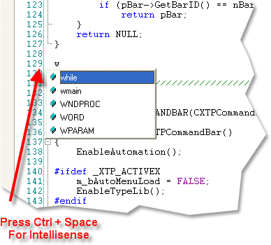
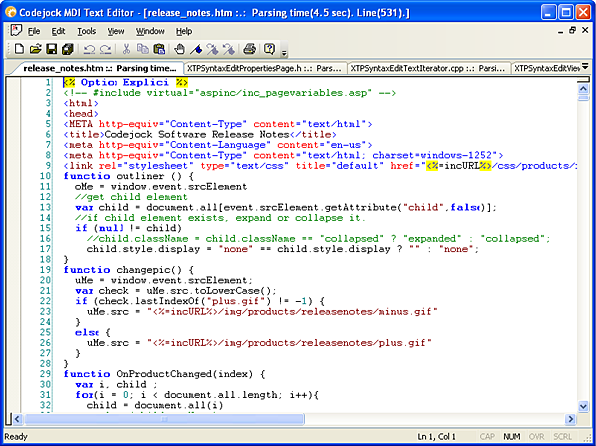
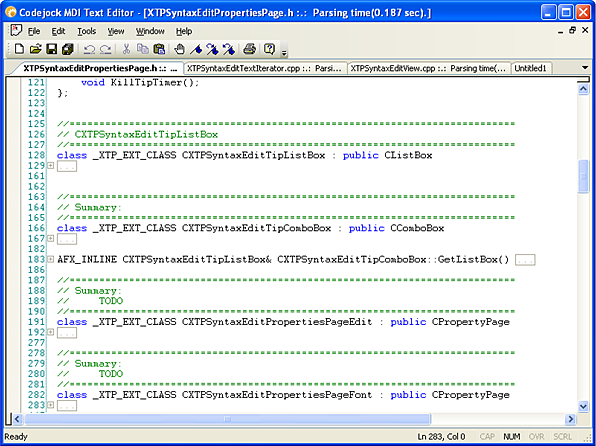
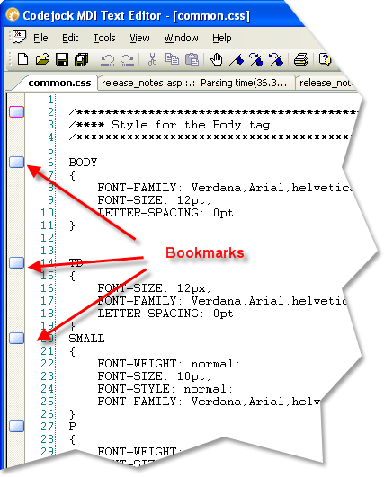
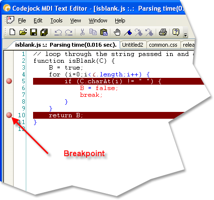
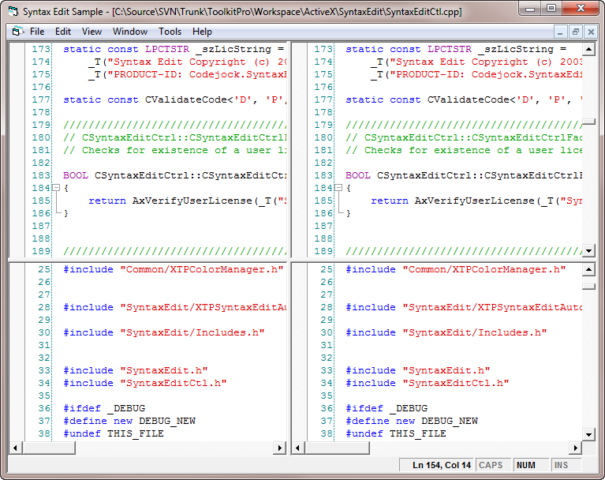

Overview
| Xtreme SyntaxEdit ActiveX Control v15.3 |
Syntax Editor control.
For a list of all members defined in this module, see SyntaxEdit members.
 ~293.gif) ~293.gif) 
|
The SyntaxEdit control is a Visual Studio .NET style Syntax Editor Control which is a highly sophisticated text editor control that supports advanced features such as text block grouping, syntax colorization, line numbers, font type, pre-defined color schemes, book marks, break points and many more advanced features.
Intellisense: Using the configuration files described below you can add intellisense to the syntax editor. To active intellisense press Ctrl + Space anytime during editing.

Syntax Colorization: INI file based syntax colorization allows you to specify specific colorization rules for your text documents. For example, you can specify a different set of colors to be used for cpp, h, html, asp, etc files. Color rules can be applied to specific words or groups of words and phrases.

The syntax editor control is capable of enhance text coloring for a number of specific input file types, I.e. C/C++ source files, HTML files, etc. User can create and customize their own text files schemes - they are independent of source files. The control contains the main configuration file, which can contain references to any specific configuration files. By default, this
file is placed in the same folder as the application executable and is called SyntaxEditor.ini. The main configuration file contains 2 blocks with references to input file lexicographic schemes in the specific format (see below) and color themes for the editor, which could be applied to the control editing any file type. The format of the main configuration file is the following:
[Schemes]
CPP=Schemas/_cpp.schclass ; Visual C++
HTML=Schemas/_HTML_ASP.schclass ; HTML and ASP
schclass=Schemas/_schclass.schclass ; Codejock Schema
NSI=Schemas/_nsi.schclass ; Nullsoft Installer
Pascal=Schemas/_pascal.schclass ; Pascal
INI=Schemas/_ini.schclass ; INI Files
SQL=Schemas/_sql.schclass ; SQL Query[Themes]
Default=Themes/colorSchema0.ini
Alternative=Themes/colorSchema1.ini
Text block grouping: Visual Studio .NET style text block grouping allows you to organize a document of text into blocks of text that can be hidden with the click of a button. Hidden blocks of text can have a message stating what has been hidden for view. This allows you to minimize the clutter of vary large text documents.

Bookmarks allow you to place a "bookmark" at any position in your text document. You can later cycle through all of your bookmarks to easily return to positions of interest in your document.

Visual Studio style breakpoints allow you to place a "breakpoint" at any position in your text document. This can be used for many different reasons, for example, if you have a code compiler you could use these breakpoints to indicate where code execution will "break" and wait for user interaction.

Visual Studio style splitter windows can be used when using the SyntaxEditFrame version of the editor. Splitter windows allow multiple versions of the same file to be displayed in up to 4 views at the same time.
